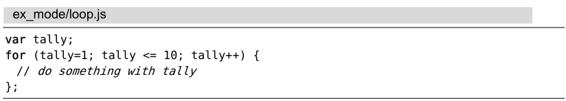
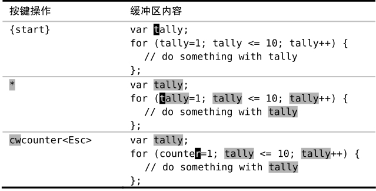

。虽然本例是以:substitute命令作为示例的，但实际上这些映射项可用于任意 Ex 命令。
。虽然本例是以:substitute命令作为示例的，但实际上这些映射项可用于任意 Ex 命令。技巧33把当前单词插入到命令行
即使是在命令行模式下，Vim 也始终知道光标位于何处以及哪个分割窗口处于活动状态。为节省时间，我们可以把活动窗口中的当前单词（或字串）插入到命令行中。
在 Vim 的命令行下，<C-r><C-w>映射项会复制光标下的单词并把它插入到命令行中。我们可以利用这一功能减少击键的次数。
假设我们想把下面这段代码中的变量tally重命名为counter：

把光标移到单词tally上后，用 *命令就可以查找它出现的每处地方（*命令等效于输入/\<<C-r><C-w>\><CR>序列，关于\<和\>在模式中的作用，请参见技巧76的讨论）。

当按下*键时，光标会正向跳到下一处匹配项，不过光标始终停留在相同的单词上。接下来，我们就可以输入cwcounter<Esc>对其进行修改。
然后，我们将用:substitute命令完成其余的修改。由于光标已经在单词“counter”上了，因此我们无需再次输入它，而是直接用<C-r><C-w>映射项把它插入到替换域：
➾:%s//<C-r><C-w>/g
这条命令看起来没省多少事，但是用两次按键就能插入一个单词不算太糟。此处也用不着输入查找模式，而这要感谢*命令。要知道为什么可以像上面这样将查找域留空，请参考技巧90。
<C-r><C-w>用于插入光标下的单词，而如果想插入光标下的字串的话（参见技巧48的说明），我们可以用<C-r><C-a>，更多细节请参见:h c_CTRL-R_CTRL-W。虽然本例是以:substitute命令作为示例的，但实际上这些映射项可用于任意 Ex 命令。
这里介绍另一种应用场景。试着打开你的vimrc文件，把光标移到其中的一项设置上，然后输入:help <C-r><C-w>，你就可以查阅该设置的文档了。